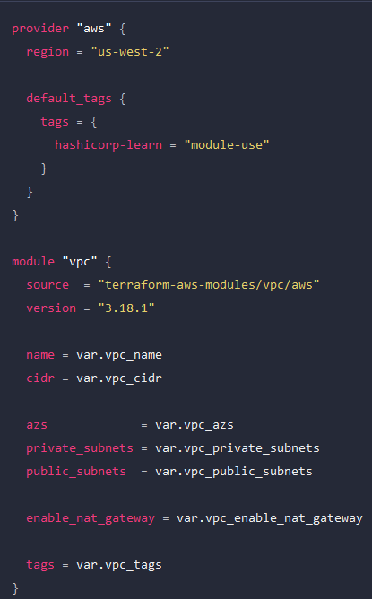

A Terraform module is a set of Terraform configuration files in a single directory. Even a simple configuration consisting of a single directory with one or more .tf files is a module. When you run Terraform commands directly from such a directory, it is considered the root module. So in this sense, every Terraform configuration is part of a module. You may have a simple set of Terraform configuration files such as:
.
├── LICENSE
├── README.md
├── main.tf
├── variables.tf
├── outputs.tf
Modules can either be loaded from the local filesystem, or a remote source
module from remote source,Example:

Set values for module input variables
Modules can contain both required and optional arguments. You must specify all required arguments to use the module. Most module arguments correspond to the module's input variables
Root variables for examples above:


Outputs:

When using a new module for the first time, you must run either terraform init or terraform get to install the module. When you run these commands, Terraform will install any new modules in the .terraform/modules directory within your configuration's working directory. For local modules, Terraform will create a symlink to the module's directory